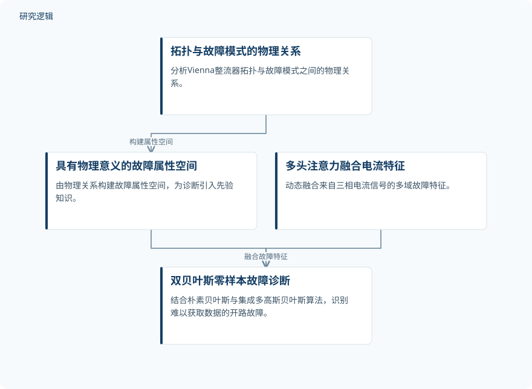

摘要解读
基于先验知识注入与注意力机制双贝叶斯网络的变换器零样本开路故障诊断
Zero-Shot Open Circuit Fault Diagnosis of Converter Based on Prior-Knowledge Injected Dual Bayesian Network With Attention Mechanism
解读更新 2026-10-17 14:29 · 依据公开摘要整理，未核验全文细节
真实设备的开路故障数据昂贵且难以收集，依赖大量标注样本的诊断方法因此面临落地障碍。这项研究以Vienna整流器为对象，将物理先验、注意力机制与双贝叶斯推断结合，探索对难以获取数据的开路故障进行零样本诊断。
文章目录
故障难采集，诊断不能只靠堆数据
电力电子系统承担能量转换与功率控制，其可靠性关系到工业电力系统、交通运输和航空航天等领域的稳定运行。开路故障难以检测，而实际场景中获取全面故障数据的成本又很高，这使依赖大量标注数据的方法受到限制。
本文关注的核心问题是：当目标开路故障的数据难以获得时，能否利用电路自身的物理关系辅助识别，而不是完全依赖故障样本覆盖？摘要提出的零样本诊断方法，正是围绕这一数据瓶颈展开。
把物理属性、电流特征与贝叶斯推断结合
作者提出融合先验知识与注意力机制的双贝叶斯零样本故障诊断方法，简称PKIDBAAM。方法首先分析Vienna整流器拓扑与故障模式之间的物理关系，据此构建具有明确物理意义的故障属性空间。
在信号侧，方法采用多头注意力机制，动态融合来自三相电流信号的多域故障特征；在推断侧，将朴素贝叶斯与集成多高斯贝叶斯算法结合，构成双贝叶斯推断框架，用于识别难以获取数据的开路故障。
依据摘要整理的诊断方法示意


概括物理先验、信号特征融合与双贝叶斯推断的关系，不代表论文原图，也不补充摘要未说明的训练配置。
下载 SVG图示关系说明
实线表示相邻阶段的信息流，虚线表示跨阶段联系或反馈。
拓扑与故障模式的物理关系 → 具有物理意义的故障属性空间：构建属性空间；具有物理意义的故障属性空间 → 双贝叶斯零样本故障诊断：引入物理先验；多头注意力融合电流特征 → 双贝叶斯零样本故障诊断：融合故障特征
实验平台报告优于经典机器学习模型
摘要报告，研究在Vienna整流器实验平台上进行了验证，结果显著优于常规经典机器学习模型。这为所提方法在该平台上的故障诊断能力提供了支持，但摘要没有给出准确率、性能差值或具体对比模型，不能据此量化优势大小。
零样本划分与验证边界仍需查阅正文
仅凭摘要，无法判断实验样本规模、故障类别覆盖、已见与未见故障的划分，以及训练和测试数据如何组织；也无法核对比较模型的配置、评价指标与“显著优于”的统计依据。这些属于当前资料未报告的信息，不意味着论文没有开展相应工作。
摘要明确提到的验证对象是Vienna整流器实验平台，尚不足以判断方法在其他变换器拓扑、不同运行工况或实际部署环境中的适用范围，也不能把潜在的智能运维价值视为已经验证的工程效果。
阅读启发：关注物理属性如何连接未见故障
阅读启发：这项工作的值得关注之处，是把具有物理意义的故障属性引入数据受限的诊断问题。进一步阅读时，可重点追问属性空间如何连接已见与未见故障、多头注意力与双贝叶斯推断各自发挥什么作用，以及实验如何界定零样本识别。厘清这些问题，比仅关注总体性能更有助于判断其智能运维价值。
以上为本站阅读启发与建议，不是论文已验证的结论。